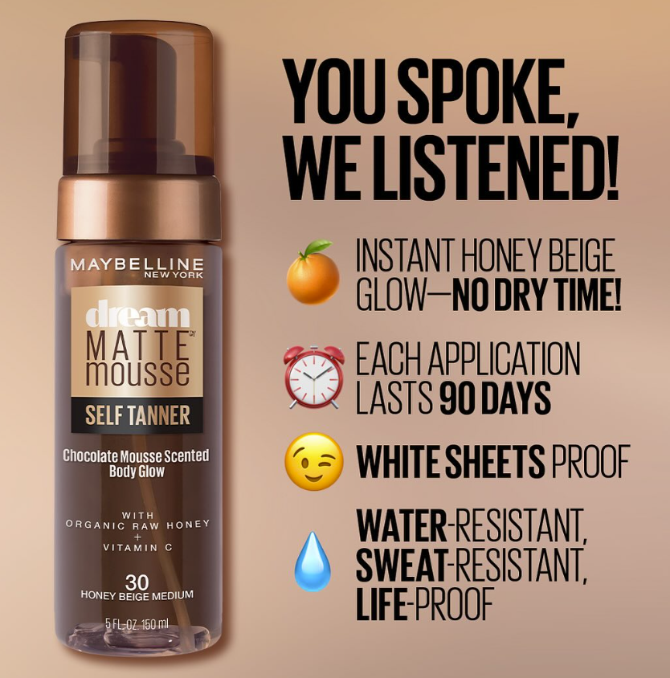
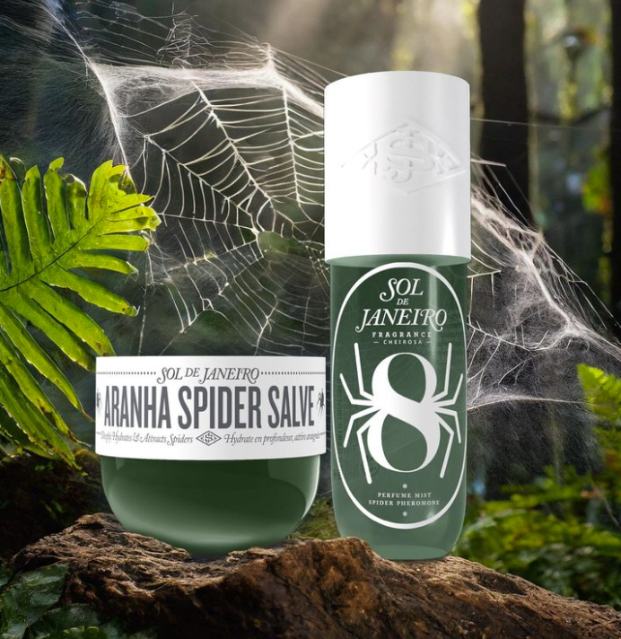
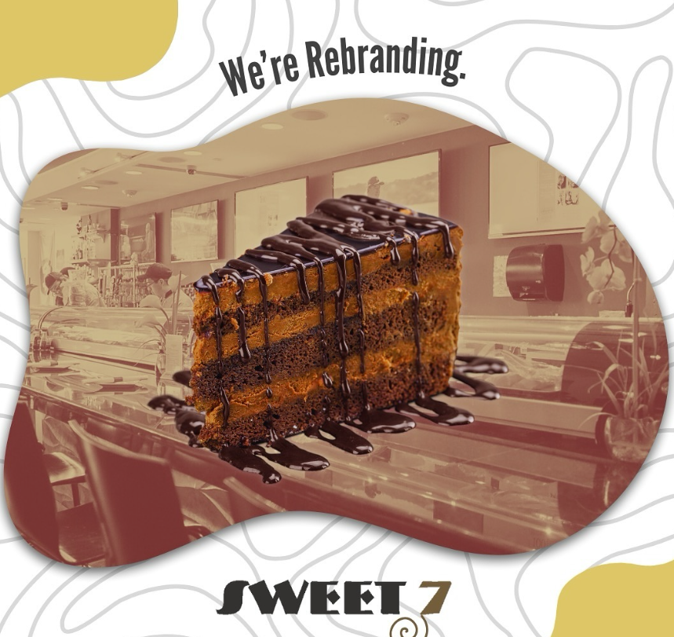
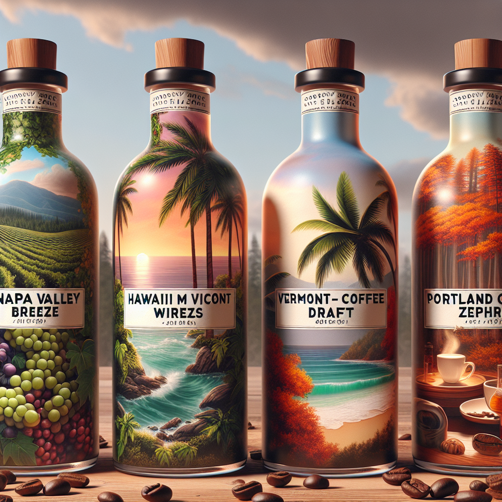
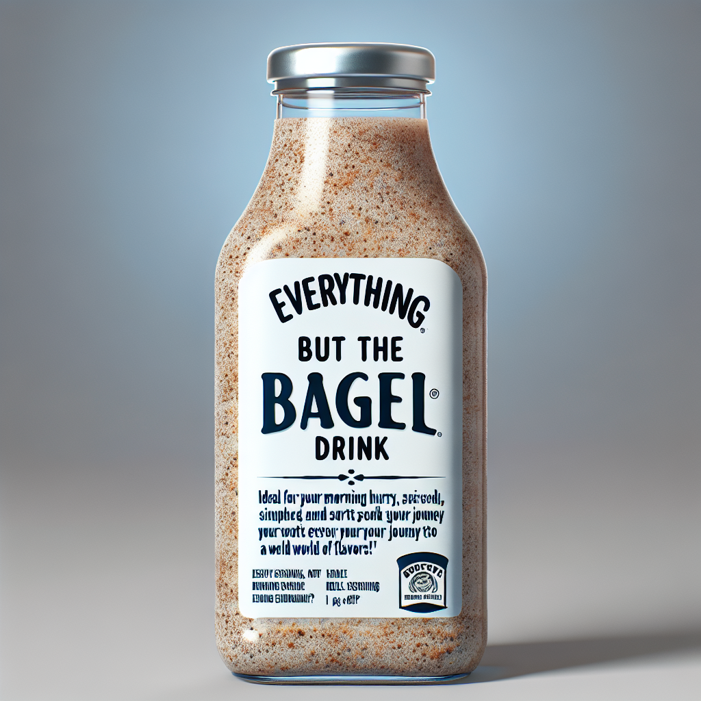
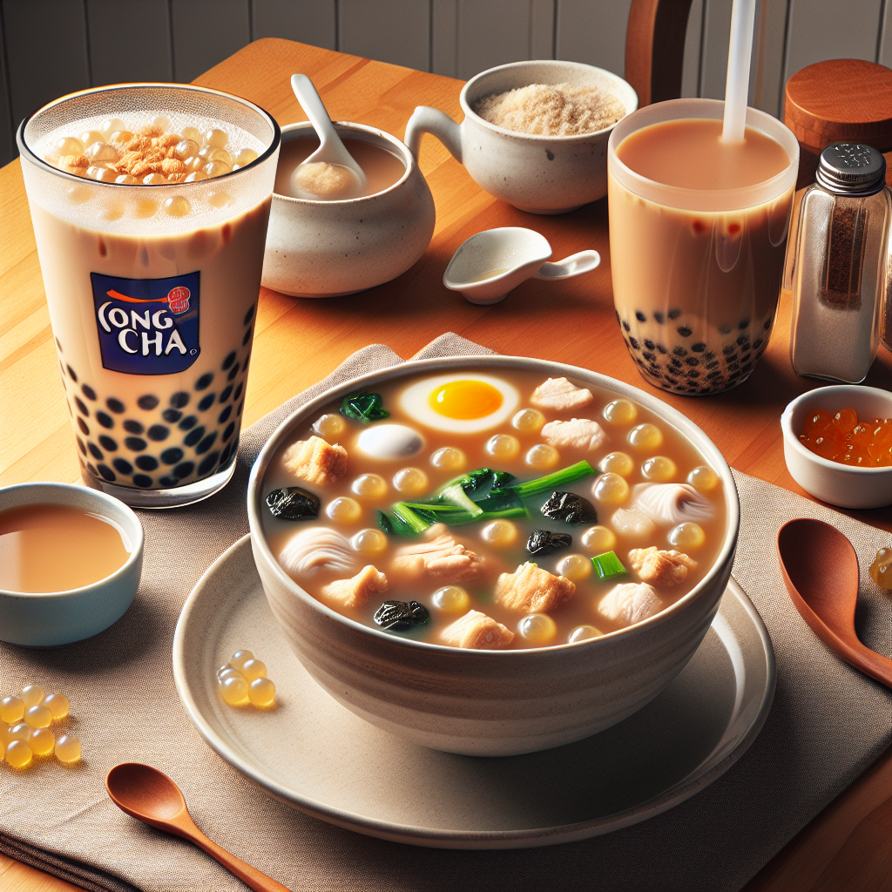

April Fools Day is known for its silly and outrageous jokes. However, more recently companies have been utilizing the day as an opportunity for eye-catching social media marketing campaigns. This can take place in many forms, from launching a “new product” to using satire within the advertisement. These campaigns often do incredibly well, garnering up to millions of likes and views, as these campaigns are bound to be shared with others. Here are some of my favorite marketing campaigns from this past April Fools:
  
Prompting
I first gave the example campaigns (pictured above) to Open AI Vision to convert the images to text: ### Sol de Janeiro: The image shows two cosmetic products with the branding “SOL DE JANEIRO”. One is labeled “ARANHA SPIDER SALVE” which suggests it might be a topical skin cream with descriptors like “Hydrate and 'perfumize'”, and the second is a “PERFUME MIST SPIDER PHEROMONE”. Both products feature a spider-themed design, hinting at spider-related properties or ingredients. The context of the setting seems to be a forest or jungle environment with a prominent spider web in the background, emphasizing the spider theme of these products. However, considering the unusual concept of spider-themed scents and creams, please be aware that this could be a fictional or novelty product, and such items might not actually contain spider-derived ingredients. ### Maybelline: This image features an advertisement for a cosmetic product. The product is a self-tanner named “Maybelline New York Dream Matte Mousse Self Tanner,” with a specific note on its chocolate mousse scent and body glow. The shade is “Honey Beige Medium.” It's marketed as being chocolate mousse scented and containing organic raw honey and vitamin C.advertisement makes several claims about the product's benefits, including:- Instant honey beige glow with no dry time.- Each application lasts 90 days.- White sheets proof, meaning it presumably won't stain bed linens.- Water-resistant, sweat-resistant, life-proof.’s important to note that some claims may be exaggerated (like a 90-day lasting period), as real performance can vary based on individual use and application. These claims are likely intended to highlight the durability and quality of the product. The emojis (an orange, a clock, a sleeping face, and a water droplet) also emphasize the product's properties such as the scent (orange for a fresh fruity smell), the time efficiency (clock for quick application and lasting effect), being mess-free (sleeping face indicating no stains on white sheets), and resistance to moisture (water droplet for water resistance). ### Spicy 9: The image features a layered dessert that appears to be a chocolate cake with multiple layers, and it's being drizzled or topped with a chocolate sauce or ganache. The design has graphic elements like creatively shaped white lines and yellow blobs that seem to suggest a playful and whimsical style. There's text overlaid on the image which states “We're Rebranding”, suggesting that a company or brand is undergoing a process to change and update their image or identity. Below the cake, there's a logo or brand name “SWEET 7” which could potentially be the name of the bakery or dessert shop related to the rebranding. The background shows a blurred interior space that looks like it could be a cafe or restaurant, with tables, chairs, and counters
Generating Campaigns
I then prompted GPT 4 to create April Fools social media marketing campaigns for different companies based on the examples above. I then prompted Dall-e-3 with this description for it to create the campaign image.
Trader Joes
GPT: Social Media Post Description: Visual: The image features a beautifully styled photo of four elegantly designed bottles, each with a distinct, artistic label that represents the different “air flavors.” The bottles are set against backdrops that reflect their specific scents:
Napa Valley Vineyard Breeze: A lush vineyard background with grapes and greenery. Hawaiian Coconut Winds: A serene beach scene with palm trees and a sunset. Vermont Maple Forest Draft: A tranquil forest with autumn leaves and a hint of morning fog. Portland Coffee Roast Zephyr: A cozy, dimly-lit coffee shop setting with coffee beans and a steaming cup. Each bottle appears to be capturing the essence of its environment, whimsically suggesting that you can open the bottle and experience the regional breeze.
Caption: “🌬️✨ Introducing Trader Joe’s Essential Air Flavors! ✨🌬️ Ever wished you could bottle the refreshing breeze of Napa Valley or the warm winds of Hawaii? Now you can! Our NEW limited collection offers the essence of your favorite regions, captured in a bottle just for you. Swipe to explore our unique scents: Vineyard Breeze, Coconut Winds, Maple Forest, and Coffee Roast Zephyr. Available today only! 😉 #AprilFools #TJEssentials #BreatheInJoy”
Engagement Strategy: Swipe Feature: Encourage users to swipe through multiple images, each focusing on one of the bottles with its corresponding backdrop, providing a closer look at the playful details. Call to Action: Ask followers to comment with the scent they’d love to try or to tag a friend who would believe these could be real. This fosters interaction and increases engagement. Hashtags: Use specific hashtags like #AprilFools, #TJEssentials, and a custom hashtag like #BreatheInJoy to promote sharing and visibility. This post would be playful and visually appealing, capturing the essence of Trader Joe’s brand while engaging the audience with a humorous April Fools’ twist.

Surprisingly, the image seems accurate, with even the words being mostly accurate, which I usually haven’t seen with Dall-e-3. However, the overall April Fools concept isn’t clear; the concept seems confusing and I don’t see the direct relation with humor/satire. The campaign also doesn’t directly relate to Trader Joes. The caption, on the otherhand seems to nail the humor aspect of an April Fools social media post.
I suspected that my prompting was too broad so I told GPT to create a campaign for a popular Trader Joe’s product:
GPT: For a playful April Fools’ campaign centered on a popular Trader Joe’s product, let’s use their beloved “Everything But The Bagel Sesame Seasoning Blend” as a basis for an imaginative new product twist.
Campaign Name: Trader Joe’s “Everything But The Bagel… Drink?” Concept: Trader Joe’s announces the launch of their latest innovative product, the “Everything But The Bagel Drink”. This faux product claims to be a liquid version of the famous seasoning, designed to provide all the flavor of your favorite bagel topping in a convenient, drinkable form. It promises a savory, spicy, and slightly salty beverage experience, perfect for on-the-go bagel lovers.
Visual: The campaign image features a sleek, modern-looking bottle with clear glass that showcases a slightly cloudy, speckled liquid resembling the seasoning blend suspended in water. The label mimics the original seasoning packaging but adapted for a beverage, complete with quirky descriptions and serving suggestions, such as “Perfect for your morning rush!” or “Just shake and sip your way to flavor town!”
Caption for Social Media Post: “🥯💧 Introducing the latest from Trader Joe’s: Everything But The Bagel Drink! Why sprinkle when you can sip? Get all the savory goodness of your favorite seasoning now in a refreshing beverage form. Limited time only - because who wouldn’t want their seasoning on-the-go? 😄 #TJEBTB #AprilFools #TraderJoes”
Engagement Strategy: Product Image: A high-quality photo of the bottle, staged in a breakfast setting, perhaps next to a plain, unseasoned bagel, emphasizing the drink as an alternative. Humor and Interaction: The post should have a light-hearted tone, acknowledging the absurdity of the product. Ask followers to comment on other Trader Joe’s products they think should have a drinkable version. Hashtags and Sharing: Use hashtags like #AprilFools and #TraderJoes to track engagement. Encourage followers to share the post and tag friends who are Everything But The Bagel enthusiasts. This post leverages the popularity and iconic status of the Everything But The Bagel Seasoning at Trader Joe’s to create a humorous and memorable April Fools’ Day prank, engaging customers with the brand in a fun and creative way.
 This campaign was significantly better and I can see this being used for Trader Joes. I then asked GPT to create a campaign for Gong Cha.
Gong Cha
For an engaging April Fools’ campaign centered around Gong Cha, a popular bubble tea chain, let’s play with their famous Milk Tea.
Campaign Name: Gong Cha “Bubble Tea Soup” Concept: Gong Cha announces the debut of their audacious new menu item, “Bubble Tea Soup.” This mock product is a humorous take on transforming their classic milk tea into a savory soup, complete with chewy tapioca pearls, claiming it’s the perfect blend of your favorite drink and a comforting soup.
Visual: The image shows a bowl commonly used for Asian soups, filled with a broth-looking liquid resembling milk tea. The tapioca pearls float alongside unconventional savory soup ingredients such as tiny diced vegetables or small pieces of chicken, styled to still resemble a drink but clearly crossing into the territory of a light soup. The setting could be a cozy café table, enhancing the homely, comforting vibe of a soup.
Caption for Social Media Post: “🍲☕ Introducing the revolutionary Bubble Tea Soup at Gong Cha! Why decide between a drink and a meal when you can have both? Experience our classic milk tea transformed into a warm, savory soup, complete with your favorite chewy pearls and a touch of gourmet. Perfect for those chilly days! Available today only. #GongChaGoesGourmet #AprilFools #BubbleTeaSoup”
Engagement Strategy: Product Image: A creatively styled photo of the bubble tea soup in an elegant, traditional soup bowl, perhaps with a spoon and chopsticks on the side, to blur the lines between beverage and meal. Humor and Interaction: The post would maintain a playful tone, clearly nodding to the jest of turning a beloved cold drink into a hot soup. Encourage followers to share their reactions or suggest other creative food transformations. Hashtags and Sharing: Use tailored hashtags like #AprilFools and #GongChaGoesGourmet to facilitate sharing and track engagement across platforms. Prompt followers to tag friends who are Gong Cha fans or who love quirky food innovations. This mock campaign taps into the popularity of Gong Cha’s bubble tea while adding a humorous twist that engages customers in a lighthearted and memorable way, perfect for social media buzz on April Fools’ Day. 
Wow… this is probably the weirdest combination of foods I’ve ever seen. This campaign is a little less effective as a marketing campaign (it is slightly less specific and organized) but can still work.
Conclusion
Overall, GPT 4 seems to be aware of popular products of top brands. Brands can utilize this to effectively generate marketing campaign ideas.